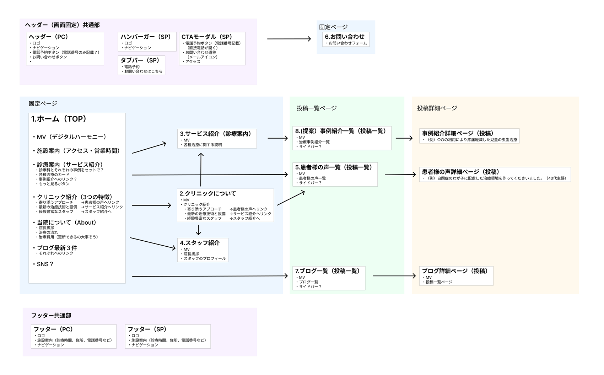
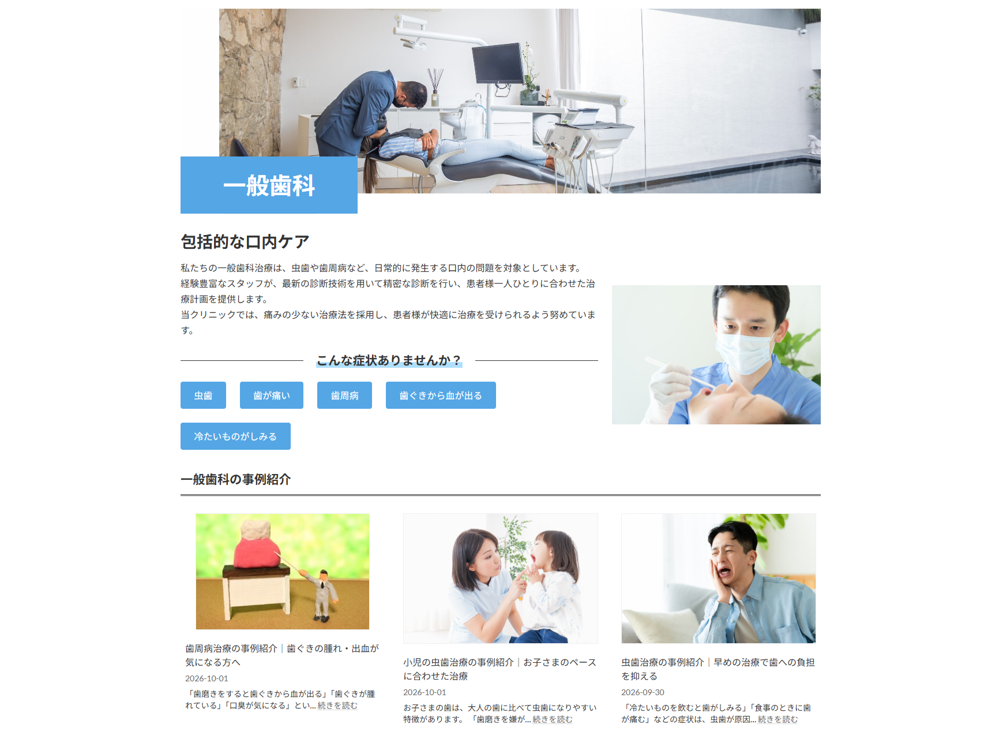
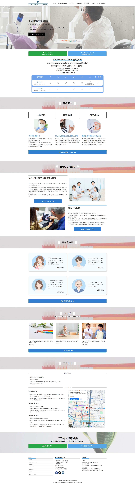

歯科医院サイト
患者様が安心して通える歯科医院を目指し、情報の整理からWordPressでのサイト構築まで取り組みました。
URL

作品概要
- クライアント
- 架空の歯科医院の院長
- 依頼内容
- 新規開業する歯科医院のサイト制作
- 制作目的
- ブランド認知の強化、患者獲得の拡大、情報アクセスの向上、歯科治療に関するブログの提供
- ターゲット
- 30〜40代の子育て世代。クリニックのある市内の住宅街に居住し、自身や家族の歯の健康管理・予防に関心がある方。
- 制作時期/期間
- 2026年9月/2週間
こだわりポイント
1.ユーザー視点を意識したコンテンツの整理と情報設計
仕様書には掲載したい情報やテキストが記載されていましたが、情報の掲載順序やページ間の導線については、自分で検討する必要がありました。
そこで、参考となる歯科医院のWebサイトを調査し、訪問者がどのような情報を求め、どのような順序で確認するのかを考えながら、コンテンツの優先順位とページ構成を整理しました。
WordPressでの実装に入る前にサイトマップや各ページに掲載する情報、ページ間の導線を可視化しました。
トップページには医院の特徴や診療内容など、各ページの概要を集約し、詳細を知りたいユーザーが固定ページやブログへ自然に移動できる構成にしました。
また、各ページから予約・診療相談へアクセスできるようCTAへの導線を設け、情報収集からお問い合わせまでスムーズにつながるサイト構成を意識しました。

2. サイトの目的から逆算したコンテンツの提案
模擬案件の課題に取り組むにあたり、与えられた仕様をそのまま形にするだけでなく、サイトの目的を達成するために、どのようなコンテンツがあるとユーザーにとって有益かを考えました。
その中で提案したのが、診療内容に関連する症例や予防方法を紹介するブログコンテンツです。
歯科医院を探しているユーザーは、自身の症状や悩みに近い情報を求めていると考えました。実際の治療事例や歯の健康に関する情報を掲載することで、医院の取り組みや専門性を知るきっかけになり、受診を検討する際の安心感にもつながると考えました。
また、WordPressの投稿機能を活用することで、納品後も医院側で記事を追加・更新できる仕組みにしました。
継続的な情報発信ができることも、サイトの運用面でのメリットだと考えています。

デザインについて
色
仕様書に記載されていた「クリーンなイメージ」を表現するため、白をベースに青を組み合わせた配色にしました。
白によって清潔感を、青によって医療機関に求められる誠実さや信頼感を表現することを意識しています。
フォント
幅広い年齢層のユーザーが閲覧することを想定し、読みやすさを優先しました。
使用テーマであるLightningのデフォルトフォントを採用し、情報をストレスなく読み進められることを重視しています。
レイアウト
WordPressのブロックエディタを使用し、コンテンツごとのまとまりや情報の優先順位を意識してレイアウトを構成しました。
情報設計をもとに、各情報の重要度に応じて見出しレベルを整理し、ページ遷移後にユーザーが最初に目にする画面の印象にも配慮しながら調整しました。
また、画像には丸みを持たせることで、サイト全体に親しみやすさと統一感を持たせました。
スマホでも見やすいようにレスポンシブデザインも行いました。
使用技術 WordPress
ブログ機能の実装と、納品後も医院側で情報を更新できる仕組みが求められていたため、WordPressを採用しました。
無料テーマの指定があったため、複数のテーマを比較検討し、ブロックエディタに対応したLightningを選択しました。
WordPressの基礎学習を終えた段階での制作だったため、まずは情報量の少ない固定ページから着手し、
ブロックエディタの基本操作を確認しながら、既存のパターンやVK Pattern Libraryを活用して、イメージするレイアウトを実現する方法を試行錯誤しました。
パターンを活用することで効率よくページを構築できる一方、デザインの細かな調整や独自のレイアウトを実現するには、CSSなどの知識が必要であることも実感しました。
今回は制作期間と学習コストを考慮し、追加CSSによるカスタマイズは行わず、ブロックエディタで実現できる範囲で制作しました。
既存テーマの機能を活用することで効率的に構築できることを学ぶと同時に、デザインの自由度を高めるためには、テーマの仕組みやCSSへの理解を深める必要があると感じました。
トップページ
